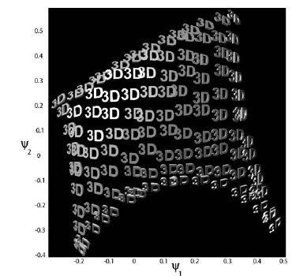
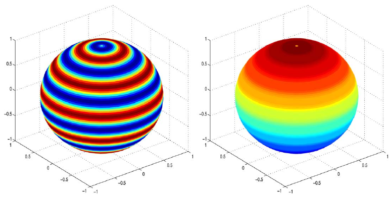
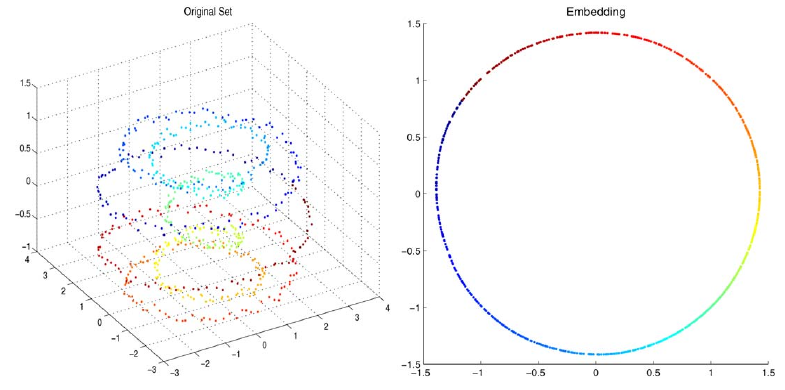
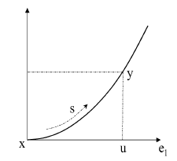
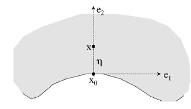

Paper: Coifman, Ronald R. and Lafon, Stephane. “Diffusion Maps.”
Applied and Computational Harmonic Analysis 21(1):5–30, 2006. DOI:
10.1016/j.acha.2006.04.006. Reviewer: Reviewer-P03 Auditor: Auditor-P03
Status: revised after audit Date: 2026-05-15 Source manifest ID: P03
Canonical reading copy:
literature/conductance_kernel_laplacian_review/sources/pdf/P03_coifman_lafon_diffusion_maps.pdf
Whole-Paper Review
Reader Background Needed
A mathematically capable reader can follow the paper with the
following prerequisites.
Weighted graphs and kernels: a symmetric nonnegative kernel
k(x,y) is a weighted adjacency/affinity function.
Markov chains: row-normalization turns affinities into transition
probabilities; powers of a transition matrix describe multi-step random
walks.
Spectral decomposition: eigenvalues/eigenvectors of a self-adjoint
or reversible Markov operator describe slow and fast modes.
Normalized graph Laplacians: a degree normalization converts edge
weights into a diffusion operator; low eigenmodes are smooth with
respect to the graph.
Basic manifold learning: the data may be samples from a
lower-dimensional manifold embedded in \(\mathbb{R}^{n}\).
Heat kernels and Laplace-Beltrami operators: on a manifold, heat
diffusion has eigenfunctions of the Laplacian and a time parameter that
smooths/localizes functions.
Density effects: when sampling is nonuniform, a graph Laplacian can
mix the geometry of the support with the sampling density.
Graph signal processing language: eigenvectors near eigenvalue 1 of
a Markov operator, or near eigenvalue 0 of a Laplacian, are
low-frequency graph signals.
What
A Non-Expert Should Understand Before Reading This Paper
The paper starts from a simple idea: if nearby or similar data points
are joined by large weights, then a random walk on those weights can
reveal the shape of the data. A one-step random walk is local. A
many-step random walk accumulates many local transitions, so it measures
whether two points are connected by many short paths, not merely whether
their raw coordinates are close.
The authors call the resulting multi-step geometry “diffusion”
geometry. Two points are close at diffusion time t if a
random walk started from either point has nearly the same
t-step distribution over the data. The main computational
trick is spectral: instead of storing all powers of the Markov matrix,
use eigenvalues and eigenvectors. Eigenvectors with large eigenvalues
change slowly under diffusion and become coordinates of a
low-dimensional embedding, the diffusion map.
The paper also warns that a graph built from Euclidean distances does
not automatically recover manifold geometry. If samples are denser in
one region than another, the graph degrees encode density as well as
geometry. Section 3 introduces an \(\alpha\) normalization that controls this
density effect: \(\alpha = 0\) keeps
the classical normalized graph Laplacian behavior, \(\alpha = 1/2\) matches a
Fokker-Planck/Langevin interpretation, and \(\alpha = 1\) removes sampling density to
approximate the Laplace-Beltrami heat operator.
Problem And Context
The paper addresses dimensionality reduction, parametrization, and
structure discovery for data represented as a weighted graph or kernel
space. It is positioned as a unifying framework for spectral clustering,
ranking, and kernel eigenmap methods (Introduction, pp. 5–6; Section
2.7, pp. 12–13).
The central problem is how to turn local affinities into global
coordinates and distances that respect connectivity. The authors argue
that distances between far-apart points in the original feature space
may be meaningless, but local similarities can be integrated by a Markov
process into meaningful multiscale geometry (Introduction, p. 6; Section
2.2, pp. 7–9).
Main Method
The method is:
Start with a symmetric, nonnegative kernel k(x,y) on a
data space (X,A,mu).
Compute the degree/volume function \(d(x)
= integral_{X} k(x,y) d\\mu(y)\).
Normalize rows to get a Markov transition kernel \(p(x,y) = k(x,y) / d(x)\).
Study powers \(P^t\), where \(p_{t}(x,y)\) is the probability of
transition from x to y in t
steps.
Use the eigenpairs \(P psi_{l} =
lambda_{l} psi_{l}\) to define diffusion distance and diffusion
map coordinates.
For Euclidean point clouds or manifold samples, optionally
renormalize the kernel by an estimated density term before Markov
normalization, using the \(\alpha\)
family in Section 3.1.
Simple pipeline diagram, original explanatory diagram:
flowchart LR
X["data points X"] --> K["affinity kernel k(x,y)"]
K --> D["degree d(x)"]
D --> P["Markov kernel p(x,y)=k(x,y)/d(x)"]
P --> Pt["multi-step diffusion P^t"]
Pt --> Dist["diffusion distance D_t"]
P --> Eig["eigenpairs lambda_l, psi_l"]
Eig --> Map["diffusion map Psi_t(x)=(lambda_l^t psi_l(x))"]
Main Formulas And Operators
[explicit] Base kernel assumptions: \(k :
X x X \to R\) is symmetric and positivity preserving, \(k(x,y)=k(y,x)\) and \(k(x,y) \ge 0\) (Section 2.1, p. 7).
[explicit] Markov kernel: \(p(x,y) =
k(x,y) / d(x)\) and \(integral_{X}
p(x,y) d\\mu(y) = 1\) (Section 2.1, p. 7).
[explicit] Diffusion operator: \(P f(x) =
integral_{X} p(x,y) f(y) d\\mu(y)\); the paper says this
preserves constants and is an averaging/diffusion operator (Section 2.1,
p. 7). The PDF text extraction shows a(x,y) in this
displayed formula, but the surrounding definition indicates
p(x,y).
[explicit] Multi-step transition: \(p_{t}(x,y)\) is the kernel of \(P^t\), the probability of transition from
x to y in t steps (Section 2.2,
p. 7).
[explicit] Stationary distribution in the finite graph case: \(\pi(y) = d(y) / sum_{z} d(z)\) (Section
2.3, p. 9).
[explicit] Spectral diffusion distance: \(D_{t}(x,y) = [sum_{l\ge 1} lambda_{l}^{2t}
(psi_{l}(x)-psi_{l}(y))^2]^{1/2}\) (Section 2.4, p. 10; Appendix
A, Eq. A.1 and following derivation, p. 21).
[explicit] Proposition 1: Euclidean distance in diffusion map space
equals diffusion distance up to the truncation accuracy (Section 2.4,
p. 10).
[explicit] Appendix A symmetrization: conjugating by \(\sqrt(\pi)\) gives a symmetric kernel \(a(x,y) = \sqrt(\pi(x)/\pi(y)) p(x,y) =
k(x,y)/(\sqrt(\pi(x)) \sqrt(\pi(y)))\), enabling self-adjoint
spectral theory (Appendix A, p. 21).
Figures And Experiments
[explicit] Figure 1, p. 8, Section 2.2: three Gaussian clusters are
diffused at \(t=8\), \(t=64\), and \(t=1024\). The left panels color points by
diffusion intensity from one source point; the right panels show \(P^8\), \(P^64\), and \(P^1024\). The figure demonstrates that
powers of P merge structures across increasing scale: three
clusters at small time, two at intermediate time, and one
stationary/rank-one structure at large time. This is the clearest visual
explanation of diffusion time as scale.
Reproduced from Coifman and Lafon (2006), Figure 1, PDF p. 8 (cropped
from canonical reading copy), internal review only. Diffusion time as
scale.
[explicit] Figure 2, p. 11, Section 2.5: images of the text “3D”
under varying viewing angles are reorganized by the first two nontrivial
eigenvectors \(psi_{1}\) and \(psi_{2}\). It shows eigenvectors
functioning as coordinates that recover latent parameters.

Reproduced from Coifman and Lafon (2006), Figure 2, PDF p. 11 (cropped
from canonical reading copy), internal review only. Eigenvectors as
latent coordinates.
[explicit] Figure 3, p. 12, Section 2.6: spectra of P,
\(P^2\), \(P^4\), \(P^8\), and \(P^16\) show that numerical rank decreases
as diffusion time increases. This is the main figure for graph low-pass
smoothing: raising eigenvalues to power t damps smaller
modes and preserves large-eigenvalue, slowly varying modes.
Reproduced from Coifman and Lafon (2006), Figure 3, PDF p. 12 (cropped
from canonical reading copy), internal review only. Eigenvalue decay
under diffusion powers; low-pass interpretation.
[explicit] Figure 4, p. 16, Section 3.4: for nonuniformly sampled
curves, columns show original curves, point densities, embeddings using
graph Laplacian normalization (\(\alpha=0\)), and embeddings using the
Laplace-Beltrami approximation (\(\alpha=1\)). The \(\alpha=1\) embedding recovers a circle and
arclength parametrization; \(\alpha=0\)
introduces density-induced corners.
Reproduced from Coifman and Lafon (2006), Figure 4, PDF p. 16 (cropped
from canonical reading copy), internal review only. Density
normalization and Laplace-Beltrami recovery.
[explicit] Figure 5, p. 18, Section 4: a directed/function-driven
diffusion on the sphere converts an oscillatory function \(f(phi,\theta)=\sin(12 \theta)\) into a
first nontrivial eigenfunction \(phi_{1}(phi,\theta)=\cos(\theta)\) that is
constant along level-set directions and smoother across the sphere.

Reproduced from Coifman and Lafon (2006), Figure 5, PDF p. 18 (cropped
from canonical reading copy), internal review only.
Directed/function-driven diffusion.
[explicit] Figure 6, p. 19, Section 5: a noisy helix is embedded as
a circle using diffusion coordinates, illustrating robustness of
diffusion distances, maps, and eigenfunctions to perturbations when
scale is larger than noise.

Reproduced from Coifman and Lafon (2006), Figure 6, PDF p. 19 (cropped
from canonical reading copy), internal review only. Noisy helix
embedding robustness.
[contextual] Figures B.1 and B.2, pp. 22 and 26, Appendix B: local
coordinate diagrams used in the asymptotic proof for manifold kernels
and boundary behavior. They support the convergence analysis rather than
the data-analysis algorithm.

Reproduced from Coifman and Lafon (2006), Figure B.1, PDF p. 22 (cropped
from canonical reading copy), internal review only. Asymptotic
local-coordinate proof diagram.

Reproduced from Coifman and Lafon (2006), Figure B.2, PDF p. 26 (cropped
from canonical reading copy), internal review only. Boundary-behavior
proof diagram.
Theoretical Claims
[explicit] A reversible Markov chain can be constructed from a
symmetric nonnegative kernel using normalized graph Laplacian row
normalization (Section 2.1, p. 7).
[explicit] The diffusion distance is a metric when the full
eigenvector expansion is used (Section 2.4, p. 10).
[explicit] Diffusion maps preserve diffusion distances in Euclidean
coordinates up to the truncation tolerance (Proposition 1, Section 2.4,
p. 10).
[explicit] Low-dimensionality comes from eigenvalue decay: for
larger t, \(lambda_{l}^t\)
suppresses modes with smaller magnitude eigenvalues (Section 2.5, p. 11;
Figure 3, p. 12).
[explicit] For manifold data, the \(\alpha\)-normalized family has
infinitesimal generator \(L_{\epsilon,\alpha}
= (I - P_{\epsilon,\alpha})/\epsilon\) and, on low
Laplace-Beltrami eigenspaces, converges to \(\Delta(f q^{1-\alpha})/q^{1-\alpha} -
[\Delta(q^{1-\alpha})/q^{1-\alpha}] f\) (Theorem 2, Section 3.1,
p. 15).
[explicit] For \(\alpha=0\), the
classical normalized graph Laplacian on isotropic weights has a
density-dependent potential term \(\Delta q /
q\) unless density is uniform (Section 3.2, p. 15).
[explicit] For \(\alpha=1/2\), the
limiting operator is connected to the forward Fokker-Planck equation and
Langevin equation \(\dot{x} = -\nabla U(x) +
\sqrt(2) \dot{w}\) with \(q=e^{-U}\) (Section 3.3, Eq. 2,
pp. 15–16).
[explicit] For \(\alpha=1\), \(L_{\epsilon,1}\) converges to the
Laplace-Beltrami operator and \(P_{\epsilon,1}^{t/\epsilon}\) approximates
the Neumann heat kernel \(e^{-t
\Delta}\) (Proposition 3, Section 3.4, p. 16; Proposition 11,
Appendix B, p. 29).
[explicit] Finite-sample approximation error depends on sample size,
scale, and intrinsic dimension; the paper reports high-probability rates
for approximating \(P_{\epsilon,\alpha}\) and \(L_{\epsilon,\alpha}\) (Section 5, p. 18)
and states Criterion 4 (p. 19).
[explicit] Perturbation robustness requires \(\sqrt(\epsilon)\) to remain larger than the
perturbation size (Eq. 3 and Criterion 5, Section 5, p. 19).
Limitations And Scope
[explicit] The base construction requires a choice of kernel; the
paper emphasizes that the kernel encodes the prior local geometry and
should be application-guided (Section 2.1, p. 7).
[explicit] Spectral theory is justified under reversibility and
additional compactness/finite-graph assumptions (Section 2.3, p. 9;
Appendix A, p. 21).
[explicit] The manifold convergence analysis assumes smooth compact
manifolds and small-scale asymptotics (Appendix B, pp. 21–29).
[explicit] Finite-sample accuracy has unfavorable dependence on
intrinsic dimension and scale; Criterion 4 states that sample size must
grow quickly as \(\epsilon\) shrinks
(Section 5, p. 19).
[explicit] Noise robustness is scale-limited; Criterion 5 requires
the diffusion scale \(\sqrt(\epsilon)\)
to exceed the perturbation size (Section 5, p. 19).
[uncertain] Section 3.4 begins “Finally, when alpha = 0” but the
heading, Proposition 3, and subsequent text all concern \(\alpha = 1\); this appears to be a
typographical error in the paper (p. 16).
Historical /
Methodological Importance
This is a foundational paper because it reinterprets several spectral
graph and kernel eigenmap methods as Markov diffusion geometry. It gives
three durable ideas:
Eigenvectors of a Markov matrix are coordinates, not just
clustering/ranking tools.
Diffusion time is a scale parameter, with \(P^t\) acting as a multiscale low-pass
operator.
Density normalization is not a detail: different normalizations
recover different limiting operators.
For the conductance/kernel Laplacian review, the paper is especially
important because it clarifies how affinity weights become transition
probabilities, how those probabilities determine smooth eigenvectors,
and how density normalization changes the object being smoothed.
Conductance / Kernel
Extraction
Conductance, Affinity,
Or Kernel Formula(s)
[explicit] General affinity kernel: k(x,y) symmetric
and nonnegative (Section 2.1, p. 7). This is the paper’s generic
“conductance-like” edge weight. The paper does not use the word
conductance for it.
[explicit] Gaussian example in Figure 1: weights \(\exp(-\Vert x_{i}-x_{j}\Vert ^2 /
\epsilon)\) with \(\epsilon =
0.7\) (Section 2.2, p. 8).
[explicit] Isotropic Euclidean kernel: \(k_{\epsilon}(x,y) = h(\Vert x-y\Vert ^2 /
\epsilon)\) (Section 3.1, p. 14; Appendix B, p. 23).
[explicit] Density estimate: \(q_{\epsilon}(x) = integral_{X} k_{\epsilon}(x,y)
q(y) dy\), approximating the true density up to a multiplicative
factor (Section 3.1, p. 14).
[explicit] Directed/function-driven kernel: \(k_{\epsilon}(x,y) = \exp(-\Vert x-y\Vert
^2/\epsilon - <\nabla f, x-y>^2/\epsilon^2)\) (Section 4,
p. 17). This favors diffusion along level sets of f.
[derived] If using the language of electrical networks or graph
smoothing, larger k(x,y) behaves like larger edge
conductance because it increases transition probability after degree
normalization and penalizes variation in the quadratic form \(sum_{x,y} k(x,y)(f(x)-f(y))^2\) (Section
2.7, p. 13). The paper itself phrases this as affinity/similarity and
local geometry.
Graph, Laplacian, Or
Diffusion Operator
[explicit] Row-stochastic Markov operator: \(P f(x) = integral p(x,y) f(y) d\\mu(y)\)
(Section 2.1, p. 7).
[explicit] Reversible Markov structure: detailed balance Eq. 1 gives
a symmetrizable operator (Section 2.3, p. 9; Appendix A, p. 21).
[explicit] Kernel eigenmap quadratic form: \(Q_{1}(f)=sum_{x} sum_{y}
k(x,y)(f(x)-f(y))^2\), normalized by \(Q_{2}(f)=sum_{x} v(x) f(x)^2\); solving
\(Q_{1} f = \lambda Q_{2} f\) gives
embedding eigenfunctions (Section 2.7, pp. 12–13).
[explicit] Infinitesimal generator: \(L_{\epsilon,\alpha} = (I -
P_{\epsilon,\alpha})/\epsilon\) (Theorem 2, p. 15).
[derived] For graph signal smoothing, \(P^t f\) is a diffusion smoother: in the
eigenbasis, each coefficient is multiplied by \(lambda_{l}^t\), so high-frequency modes
with smaller \(|lambda_{l}|\) are
damped as t grows (Sections 2.4–2.6, pp. 10–12; Figure 3,
p. 12).
Task
The paper supports:
diffusion geometry and multiscale distances;
dimensionality reduction and parametrization;
spectral clustering and ranking as related contexts;
kernel eigenmap unification;
manifold learning and Laplace-Beltrami approximation;
Fokker-Planck/Langevin dynamical-system analysis;
semi-supervised classification via random walks, commute times, and
harmonic measure;
graph signal smoothing in the derived sense of low-pass diffusion by
\(P^t\).
Explicit Author Motivations
[explicit] The abstract states that diffusion processes are used to
find meaningful geometric descriptions of data and that eigenfunctions
of Markov matrices construct diffusion map coordinates (p. 5).
[explicit] The introduction motivates graph methods because they
balance simplicity, interpretability, and ability to represent complex
relationships (p. 5).
[explicit] The authors motivate diffusion distance as a
connectivity-based distance robust to noise because it sums over all
paths of length t (Section 2.4, p. 10).
[explicit] Section 3 motivates \(\alpha\) normalization by asking how
density and underlying geometry influence eigenfunctions and spectra
(p. 13).
[explicit] Section 4 motivates directed kernels as task-specific
ways to define fast and slow Markov directions (p. 17).
Derived Or Implied
Motivations
[derived] The paper motivates low-pass graph smoothing even though
it does not use that exact phrase: Section 2.6 identifies leading
eigenfunctions as low-frequency content and Figure 3 shows increasing
powers of P reducing numerical rank.
[derived] The density normalization is a warning for any
kernel-conductance method: if conductances are built from sample
proximity, degree and density can dominate the spectrum unless
explicitly normalized.
[derived] The method offers a comparator class for
length/kernel-conductance smoothing: replace an overlap-density edge
rule with a geometry-derived kernel, normalize it into P,
and use \(P^t\), heat-kernel powers, or
low eigenvectors as smoothers.
Effect On
Eigenfunctions / Diffusion / Smoothing
[explicit] Eigenvectors at the beginning of the spectrum, near \(lambda_{0}=1\), have low-frequency content;
deeper eigenvectors become increasingly oscillatory (Section 2.6,
p. 12).
[explicit] Increasing t shrinks the contribution of
smaller eigenvalues via \(lambda_{l}^t\), reducing the number of
significant eigenvectors (Section 2.4, p. 10; Figure 3, p. 12).
[explicit] Diffusion distance uses all paths of length
t; this makes it robust to noise and cluster-sensitive
(Section 2.4, p. 10).
[explicit] For \(\alpha=1\),
density is removed and geometry is recovered; Figure 4 shows this for
nonuniformly sampled curves (Section 3.4, pp. 16–17).
[derived] In graph smoothing terms, \(P^t\) is a low-pass filter with transfer
function \(\lambda^t\); a
Laplacian-style smoother would instead use an equivalent function of
\(I-P\) or the normalized
Laplacian.
Relationship
To Adaptive-Scale Graph Construction
[contextual] The paper uses fixed-bandwidth kernels such as \(\exp(-\Vert x_{i}-x_{j}\Vert ^2/\epsilon)\)
and \(h(\Vert x-y\Vert ^2/\epsilon)\),
not self-tuned or variable-bandwidth local scales (Figure 1, p. 8;
Section 3.1, p. 14).
[explicit] It does adapt for sampling density through \(q_{\epsilon}(x)^\alpha
q_{\epsilon}(y)^\alpha\), which is a density normalization rather
than a pointwise bandwidth selection (Section 3.1, p. 14).
[derived] Later adaptive-scale methods can be understood as
modifying the kernel-conductance stage before Markov normalization.
Coifman-Lafon supplies the normalization/eigenbasis logic against which
those variants should be compared.
What The Paper Does Not
Claim
[explicit/contextual] It does not claim that every kernel choice is
appropriate; Section 2.1 says kernel choice should be guided by the
application.
[contextual] It does not present current graph signal processing
terminology or a formal low-pass filter design framework, though Section
2.6 gives the spectral basis for that interpretation.
[contextual] It does not define conductance in the
electrical-network sense; it defines affinities/kernels and Markov
probabilities.
[contextual] It does not propose overlap-density smoothing or any
gflow-specific smoother.
[contextual] It does not solve bandwidth selection as a primary
contribution; \(\epsilon\) appears as a
scale parameter, with finite-sample and noise constraints discussed in
Section 5.
Relevance To gflow / SIMODS
For SIMODS, this paper is most useful as a principled template for
planned length/kernel-conductance comparators, not as a description of
current gflow overlap-density smoothing.
[derived] Current fit.rdgraph.regression()
overlap-density smoothing should remain described as its own graph
construction and smoothing semantics. Coifman-Lafon should not be cited
as evidence that the current overlap-density edge weights are
diffusion-map kernels unless the code actually constructs the same
Markov normalization and spectral/diffusion operator.
[derived] Planned length/kernel-conductance comparators can borrow
the paper’s pipeline: choose a symmetric nonnegative edge
conductance/kernel, degree-normalize into P, then smooth by
\(P^t\) or by retaining leading
diffusion coordinates/eigenvectors.
[derived] The paper highlights an audit point for SIMODS: if edge
weights depend on sample density or overlap counts, the resulting
smoother may mix biological/geometric structure with sampling density.
An \(\alpha\)-style comparator would
make that distinction explicit.
[derived] The low-pass interpretation is directly relevant: leading
diffusion eigenvectors are graph-smooth basis functions; applying powers
of P damps oscillatory components.
Figure Handling
Copied Paper Figures Used
Reproduced cropped figure panels for Figures 1–6 and Appendix Figures
B.1–B.2 are managed by paper_figure_screenshots.yml and
embedded in the generated HTML memo next to the primary figure
descriptions. These are internal-review cropped figure panels from the
canonical reading copy, not manuscript-ready reused figures.
Original
Explanatory Figures Proposed Or Created
No external figure file was created. An original Mermaid pipeline
diagram is included inline above under “Main Method”; it illustrates the
concept \(data \to kernel \to degree \to
Markov operator \to diffusion powers/eigenvectors \to
distance/map\).
Evidence Table
Claim
Label
Source reference
Notes
A symmetric nonnegative kernel defines the starting affinity
graph.
explicit
Section 2.1, p. 7
\(k(x,y)=k(y,x)\), \(k(x,y)\ge 0\).
Degree normalization creates a Markov transition kernel.
explicit
Section 2.1, p. 7
\(d(x)=integral k\), \(p=k/d\), rows integrate to 1.
The Markov chain is reversible under the degree stationary
distribution.
Diffusion distance has an eigen-expansion using \(lambda_{l}^{2t}\) and \(psi_{l}\).
explicit
Section 2.4, p. 10; Appendix A, p. 21
Derived in Appendix A from Eq. A.1.
Diffusion map coordinates are \(lambda_{l}^t psi_{l}(x)\).
explicit
Section 2.4, p. 10
Truncated by s(delta,t).
Diffusion map Euclidean distances equal diffusion distances up to
accuracy.
explicit
Proposition 1, p. 10
Core embedding claim.
Raising P to larger powers is low-pass smoothing.
derived
Section 2.6 and Figure 3, p. 12
Paper says leading eigenfunctions have low-frequency content;
low-pass wording is our graph-signal interpretation.
\(\alpha=0\) retains density
effects.
explicit
Section 3.2, p. 15
Limiting operator includes \(\Delta
q/q\).
\(\alpha=1/2\) connects to
Fokker-Planck/Langevin dynamics.
explicit
Section 3.3, pp. 15–16; Eq. 2
Uses \(q=e^{-U}\).
\(\alpha=1\) approximates
Laplace-Beltrami/heat diffusion independent of density.
explicit
Proposition 3, p. 16; Figure 4, pp. 16–17
Also Proposition 11, p. 29.
The Section 3.4 phrase “when alpha=0” appears to be a typo.
uncertain
Section 3.4, p. 16
Heading/proposition/text all say \(\alpha=1\).
The paper gives a template for future kernel-conductance smoothers,
not current gflow overlap-density smoothing.
derived
Whole paper; especially Sections 2.1, 2.6, 3.1
Requires implementation-specific mapping before citation as direct
evidence.
Open Questions For Auditor
Should the audit memo treat the Section 3.4 “when alpha=0” sentence
as a formal erratum/typo, or just avoid mentioning it outside review
notes?
Does H005 want a separate original figure file under
figures/P03_*, or is the inline Mermaid pipeline
sufficient?
For SIMODS, which planned comparator should map most directly to
Coifman-Lafon: row-stochastic \(P^t\)
smoothing, symmetric normalized Laplacian smoothing, or
diffusion-coordinate truncation?
Should the gflow comparison explicitly test density sensitivity,
e.g., an \(\alpha=0\) versus \(\alpha=1\) comparator on the same graph
family?
Are overlap-density edge weights intended to behave like
affinities/conductances, transition probabilities, or pre-normalized
smoothing weights in current fit.rdgraph.regression()?
Revision Notes
Post-Audit Revision,
2026-05-15
Auditor-P03 requested that Figure 3 be described as supporting a
derived low-pass interpretation, not as an explicit
graph-signal-processing claim. The paper explicitly shows powers of
\(P\) shrinking smaller eigenvalue
contributions; calling this “low-pass smoothing” is our derived
synthesis.
SIMODS/gflow clarification for synthesis: current
fit.rdgraph.regression() treats weight.list as
edge lengths for neighborhood ordering/truncation and uses
overlap-density/Riemannian-complex conductance, not direct length,
Gaussian, or Markov diffusion conductance.
The Section 3.4 \(\alpha=0\)
sentence should be described as an apparent PDF typo because the
heading, Proposition 3, and surrounding text concern \(\alpha=1\). Do not call it a formal erratum
unless another source confirms it.
2026-05-15: Initial Reviewer-P03 memo drafted from full 26-page
canonical PDF, including visual inspection of Figures 1–6 and Appendix
Figures B.1–B.2.